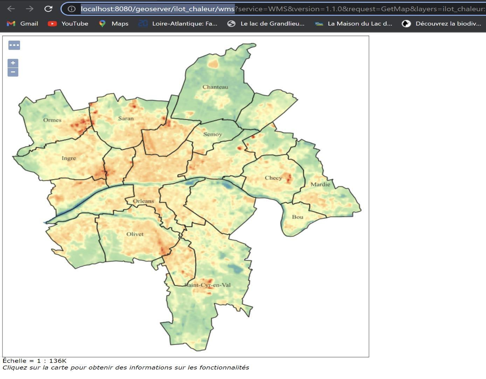
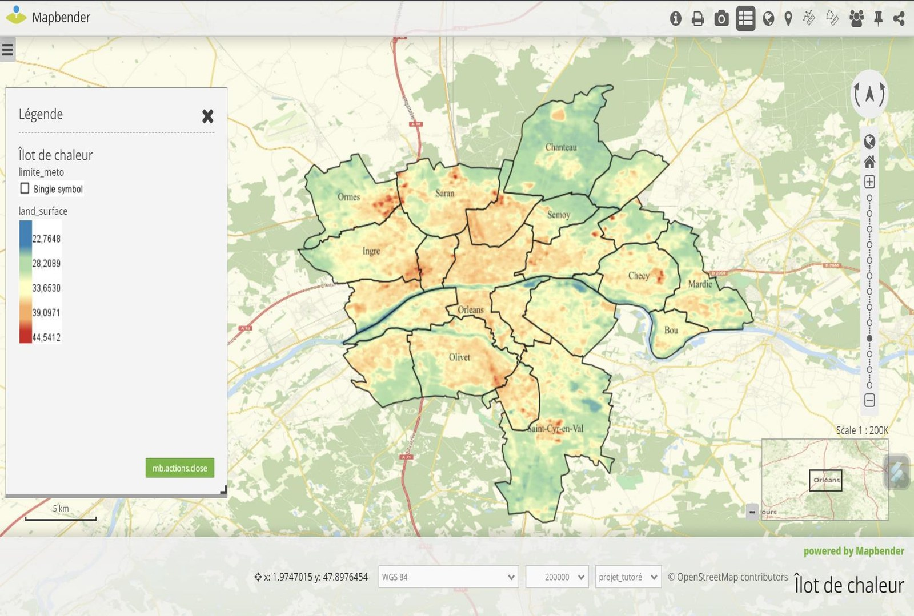

Géographie · Université d'Orléans · Projet Tutoré · Le Webmapping : définition, utilité et outils
Cartographie web des îlots de chaleur avec Mapbender
Mise en ligne d'une carte interactive avec GeoServer et Mapbender
Contexte et objectif
Le webmapping — la diffusion et la visualisation de données géographiques via un navigateur web — s'est imposé comme un outil incontournable pour rendre l'information géographique accessible au grand public, en particulier lorsqu'un phénomène évolue en continu ou couvre une zone trop vaste pour une carte statique. Ce projet tutoré vise à définir le webmapping, à recenser ses outils (serveurs cartographiques, bases de données spatiales, logiciels de diffusion) et à identifier, à travers un cas pratique, la solution la mieux adaptée pour permettre à des élus locaux de diffuser des cartes auprès de la population d'Orléans Métropole.
Démarche et outils
Après une revue de la littérature sur l'architecture client/serveur du webmapping (module géodatabase PostgreSQL/PostGIS, module SIG, module SIG Web), le projet met en œuvre une chaîne complète en logiciels libres : les couches SIG (ici, une carte des îlots de chaleur urbains) sont chargées et stylées dans GeoServer, qui les publie en flux WMS/WFS. Ces flux sont ensuite importés dans Mapbender, une application open source de création de géoportails, pour construire une application web complète (mise en page, légende, outils de navigation) consultable directement depuis un navigateur.
Résultats
Le projet aboutit à une application webmapping fonctionnelle diffusant la carte des îlots de chaleur d'Orléans Métropole, avec légende interactive, échelle et fond de plan. La comparaison des outils étudiés (GoogleEngine, LizMap, Mapbender) confirme Mapbender comme solution particulièrement adaptée : son caractère open source et l'abondance de tutoriels en ligne en facilitent la prise en main, tout en offrant les trois briques indispensables à tout webmapping — base de données, serveur cartographique et application web SIG.

